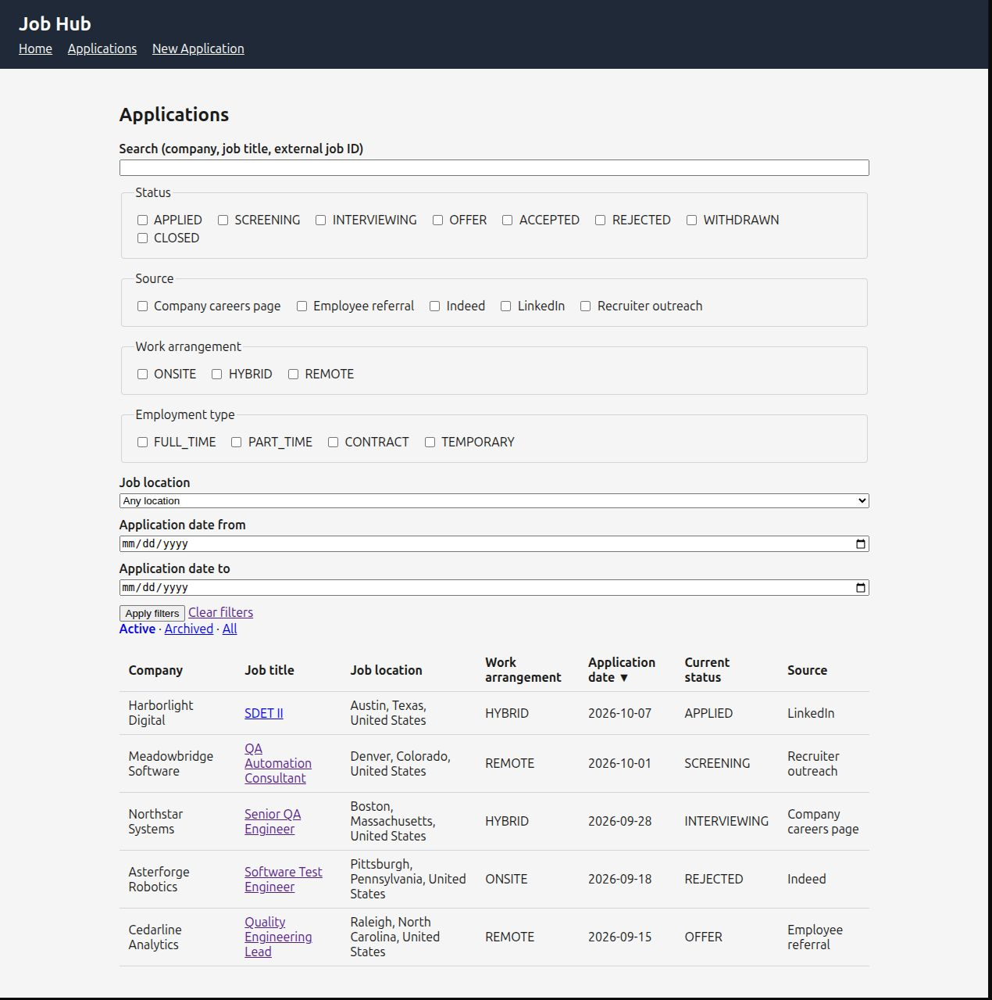
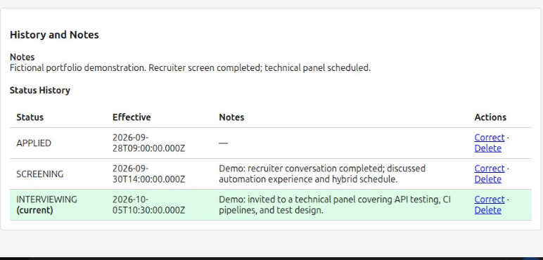

Project story
Job Search Hub: Turning a Spreadsheet Problem into Software
A personal operational problem became an opportunity to build a maintainable application—and test it like a real product.
The situation
My job search had become a project of its own. Applications, recruiter conversations, job descriptions, compensation details, and follow-ups were spread across job boards, email, and increasingly complicated spreadsheets. The spreadsheet was useful, but I was spending more time maintaining the information than I wanted—and it was too easy for important history to disappear behind a single current-status cell.
I had just used Workflow Tracker to challenge myself with AI-assisted development and test automation. This time, instead of inventing a system to test, I already had a real problem. I wanted to see whether I could turn that need into software I would actually use, while applying the same discipline I had spent years bringing to other people's products.
The approach
The tempting version of Job Search Hub would do everything: collect openings, score matches, track recruiters, manage interviews, and automate follow-up. I deliberately did not start there. The first boundary was simpler: once I submit an application, I need to record it accurately and understand what happens afterward.
That choice gave Phase 1 a concrete purpose. It needed to capture the employer, position, application date, original posting, location, compensation, and source; preserve status changes; and make records easy to find again. Prospecting, automated discovery, and AI job evaluation could wait. Deferring them was a product decision, not an admission that the idea lacked ambition.

Where development stands
Job Search Hub is still early in development. The initial application-recording workflow, relational data model, and independent browser testing provide a working foundation, not a finished job-search platform. There is considerably more I want it to do.
Recently, I have spent more time getting this portfolio published and building the development infrastructure and AI-assisted workflow that will support the larger Job Search Hub effort. That work has taken priority over adding application features for now. The goal is to return to the project with a clearer way to plan, implement, test, and review changes as its scope grows.
Designing for useful history
One of the first design questions was whether I was simply recreating a spreadsheet in a browser. If each application were just one row with a status field, the new interface would not solve the underlying problem. An application can move from submitted to screening to interviewing and beyond. Those changes have dates, context, and sometimes notes worth preserving.
I used a relational SQLite model to distinguish applications, companies, locations, sources, and status history. Company headquarters is not necessarily the job location. The date I applied is not necessarily the effective date of a later status. Compensation amounts need a basis to mean anything. These distinctions are easy to overlook in a quick prototype; they become important when the information is used for filtering, reporting, or understanding past decisions.

Verifying what actually persisted
The application has its own tests, but I also wanted independent system-level evidence. I created a separate Selenium and Pytest repository that interacts with Job Search Hub through a real Chrome browser. It does not import the application's business logic or reach into its implementation to manufacture a passing result.
Isolation became a particularly important design decision. Each application test starts its own Flask process against a fresh, disposable SQLite database. It never touches my real job-search records. When a test creates an application, it checks the user-visible result and can query that same temporary database read-only to confirm the record and initial status-history entry actually exist. A status-change test checks that the new event was added without losing the old one. A screen that looks correct is not always proof that the underlying data is correct.
Choosing meaningful coverage
The browser suite covers selected workflows such as application creation, status history, and validation. It is not intended to duplicate every lower-level validation test, and it does not yet cover every Phase 1 scenario. Exhaustive filtering, duplicate-warning behavior, and archive/restore remain examples of work that can be added deliberately rather than pretending that a small suite proves everything.
This reflects how I approach QA professionally: choose the right level for each question, make test data trustworthy, and avoid repeating the same assertion through three layers merely to increase a test count. The objective is confidence in behavior, not a large-looking automation report.
What I took away — and where it led
Job Search Hub changed the stakes of my experiment. I was no longer asking only whether AI could help me build unfamiliar software. I was asking whether the result could remain understandable, maintainable, and trustworthy as requirements evolved. That meant paying attention to decisions, test evidence, and the cost of changing direction.
It also exposed a new problem. Coordinating AI assistance across planning, implementation, review, and testing required repeated context handoffs and careful tracking of what had actually been verified. Solving that problem became the next project: Conductor.
Product and quality evidence
How the application preserves useful information and how its behavior is verified.
Application records
Employer, role, source, compensation, and location
Structured information captured after applyingStatus history
Changes preserved instead of overwritten
Effective dates and prior status retainedBrowser automation
User workflows exercised in Chrome
Separate Selenium / Pytest repositoryPersistence checks
Verify the data behind the screen
Isolated SQLite database and read-only queries